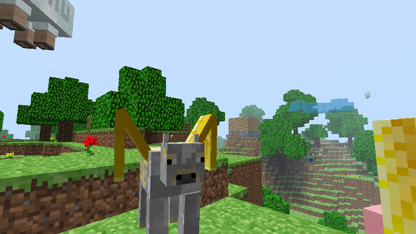
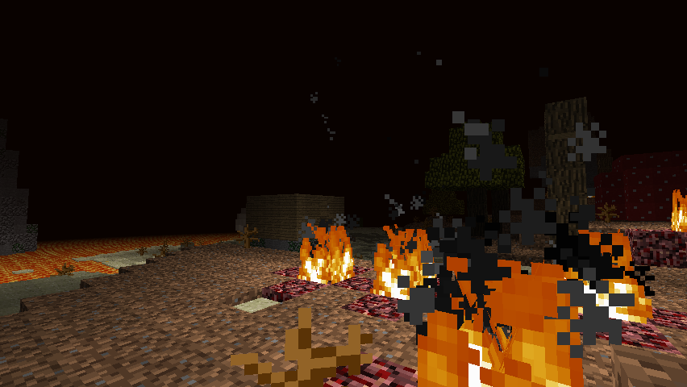

Intro
Minecraft Inslands started as en experiments. I wanted to be able to play minecraft in really dated or limited hardware, specially hardware with slow storage, such as the early Asus Eee PC or Atom based laptops with MicroSDs cards on slow USB-like connections. Indev generated the whole world in memory once and played from there, but such an old version was not very well optimized and lacked many features I personally miss. So I had the idea on writing a custom WorldProvider for b1.7.3 that created limited size worlds at once and stored them complete in RAM, so it could take advantage of a chunked world for better processing but it didn't have to rely on reading and writing new chunks to disk.
Inslands generates a finite world (3 sizes available) and terraforms it so it forms an island surrounded by ocean, or a set of floating islands. Sometimes you get a big bunch of land, sometimes you just get a tiny archipielago.
Then I found it suitable to bring back the original Indev level themes and try to expand from there. When Inslands is complete, each level theme will have specific gameplay items and different experiences.
Inslands is far for complete but I've decided to release a new build everytime I complete a set of features.
To play Inslands open b1.7.3's minecraft.jar and/or minecraft_server.jar with a file archiver, delete META_INF, and copy all files in the zips inside, or use the "add to jar" feature available in some launchers.
Themes in the server
To select a level theme in the server use theme=Normal, Hell, Paradise or Forest in server.properties.Releases (latest first)
v240607 - Theme paradise features
- Selecting theme paradise pre-selects the sky generator if no world type was selected.
- Sky generator works again. Noise gen has been slightly modified so land chunks are thicker so they can contain more dungeons.
- Falling into the void works again.
- Aerclouds for paradise floating islands (from Aether).
- Aether Bronze dungeons adapted to the fact that levels are small and they have to spawn more often, to allow for hollower sections.
- Find crying obsidian, obsidian wands and saddles in Bronze Dungeons.
- Substituted most vanilla animals for Aether variants. Fly to other islands using saddled pigs or cows.
- Small fixes
- Plant acorn on tilled field, fertilize to get new sapling.
- You can fertilize dead dirt to get new grass (small chance) or mushrooms.
- Big mushroom blocks can be smelted into charcoal. Charcoal and sticks gives you two torches.
- Craft an iron boat with 6 iron ingots.
- Added achievements for all the above.
- Eating animation.
- Small fixes.
Known problems
Still using b1.7.3 netcode, a situation which won't change for a while. So still wobbly server.
v240607 client | v240607 server
v240602 - Theme hell features
Very few trees have an actual canopy, so you must find a way to make wood renewable. Also, seeds only drop from tall grass and there's no grass. Luckily, there's plenty of fossils.
Known problems
Wobbly server, need to do some proper review or port r125 netcode like in Infhell. Will leave for later (next?).